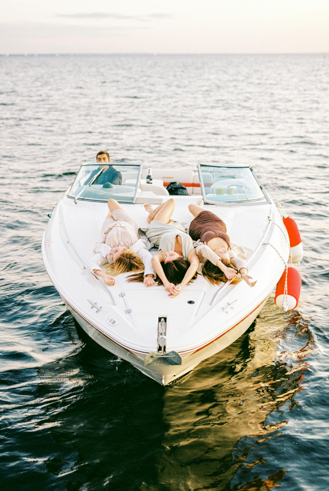
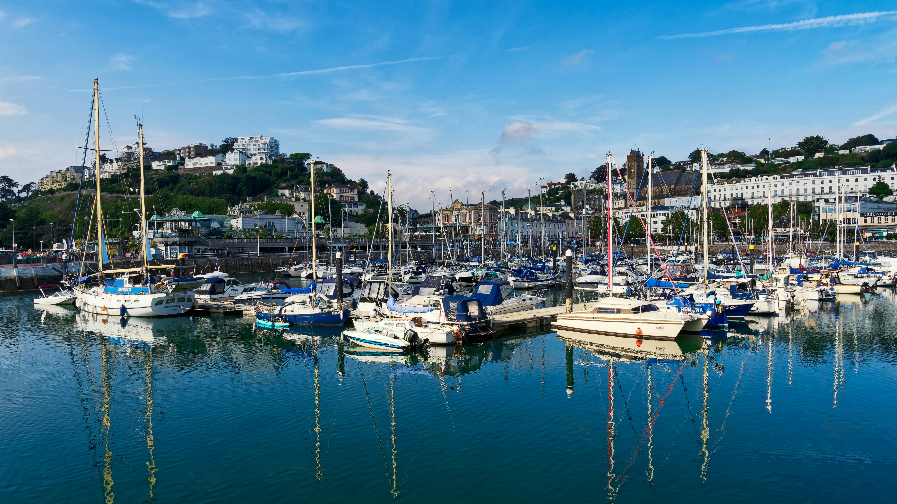
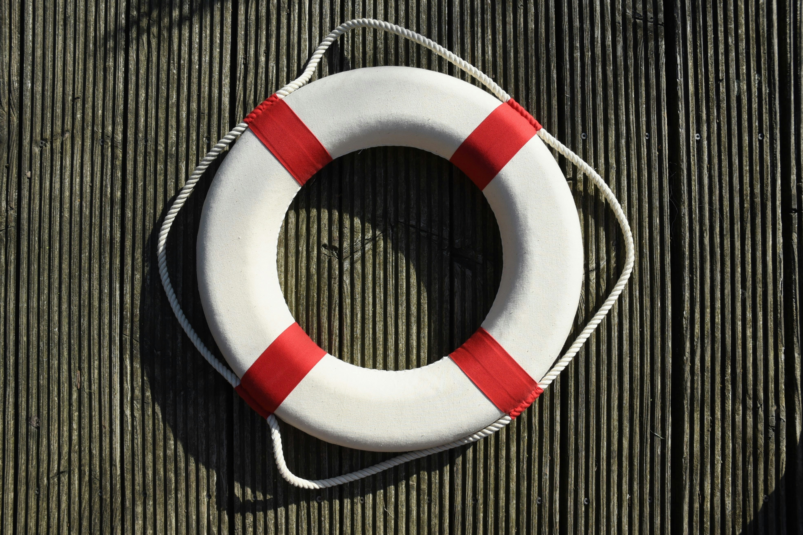
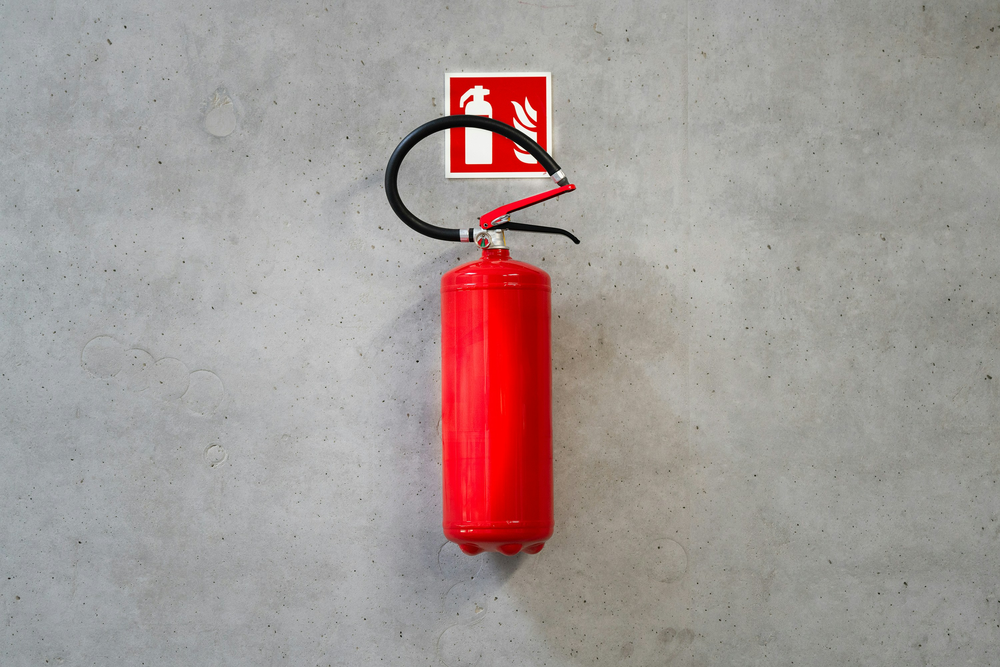
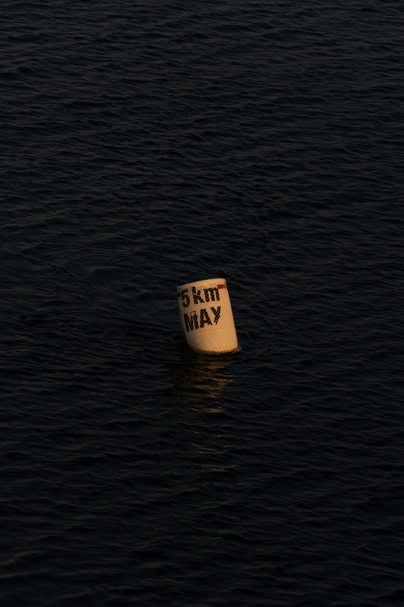

What Is Boating?
Boating is a recreational activity that involves operating or riding on a boat for leisure, transportation, or sport. For many people, boating is a way to relax, explore nature, and spend quality time with friends or family. Being on the water offers a unique sense of freedom that you don’t get on land.

Image source: Pexels | License: Pexels License
Common Types of Boats
There are many different types of boats each designed for their own purpose. Powerboats are usually popular for watersports and cruising, pontoon boats are great for socializing, and fishing boats are built for utility and storage. Large yachts are designed for long trips and comfort.

Image source: Pexels | License: Pexels License
Boating Safety Basics
Safety is the most important part of boating. Following navigation rules, wearing a life jacket, and paying attention to weather can prevent accidents and keep everyone safe.

Image source: Unsplash | License: Unsplash License
Essential Boating Gear
Every boat should have the essential navigation and safety equipment. This includes life jackets, fire extinguisher, a first aid kit, ropes, fenders, and navigation lights. Having the right gear ensures a safe ride.

Image source: Unsplash | License: Unsplash License
Tips for First-Time Boaters
First-time boaters should take things slow and practice in calm conditions. Learning to navigate safely, dock properly, and asking experienced boaters can make the experience safer and more enjoyable.

Image source: Unsplash | License: Unsplash License